FAA camera view samples
21 snapshots on 2026-09-23 · storm presence and view quality labeled separately
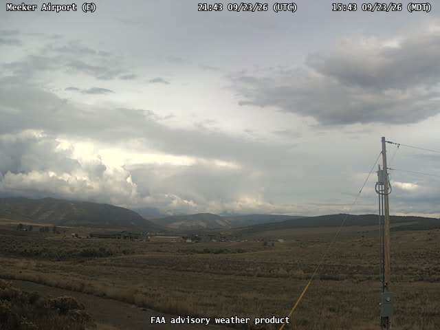
12096 · storm_view · goodMeeker Airport · East
2026-09-23T21:43:59.991Z
user confirmed as a good storm viewFAA source 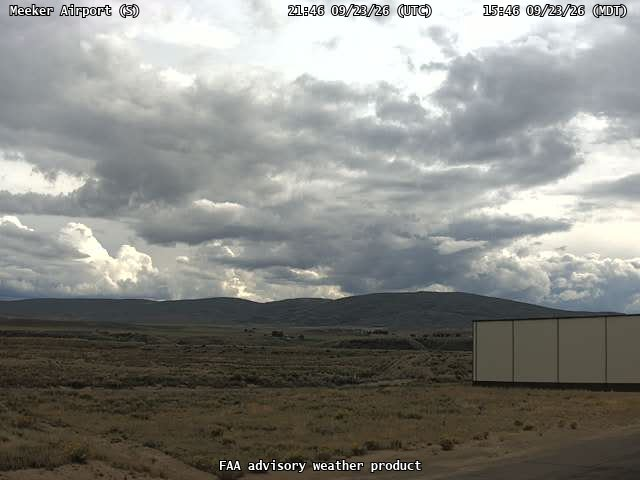
12097 · storm_view · goodFAA camera 12097
2026-09-23T21:46:41.949Z
user selected as a good storm viewFAA source 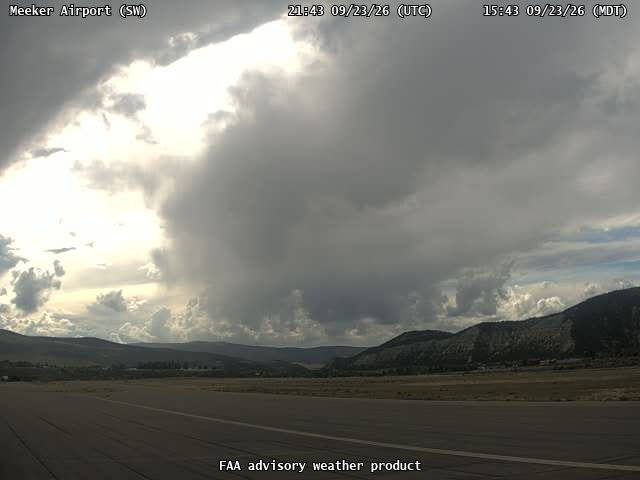
12098 · storm_view · goodFAA camera 12098
2026-09-23T21:43:53.167Z
user selected as a good storm viewFAA source 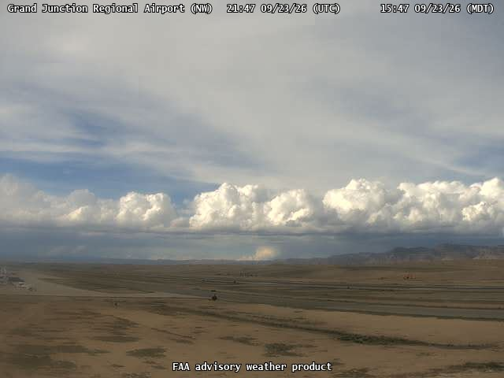
12102 · storm_view · goodFAA camera 12102
2026-09-23T21:47:59.086Z
user selected as a good storm viewFAA source 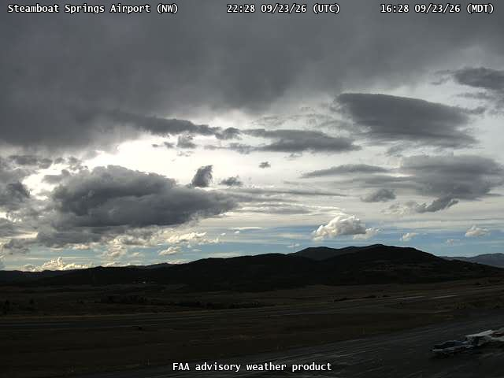
12106 · storm_view · goodSteamboat Springs Airport · NorthWest
2026-09-23T22:28:06.836Z
user selected as a good storm viewFAA source 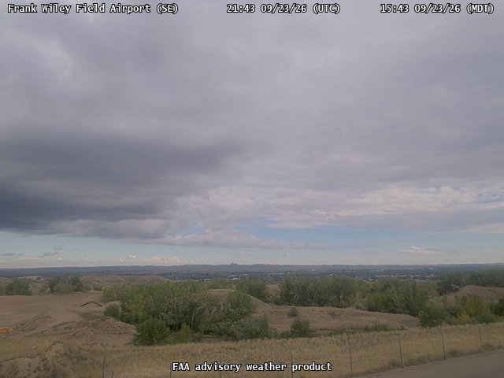
12187 · storm_view · goodFrank Wiley Field Airport · SouthEast
2026-09-23T21:43:55.776Z
user selected as a good storm viewFAA source 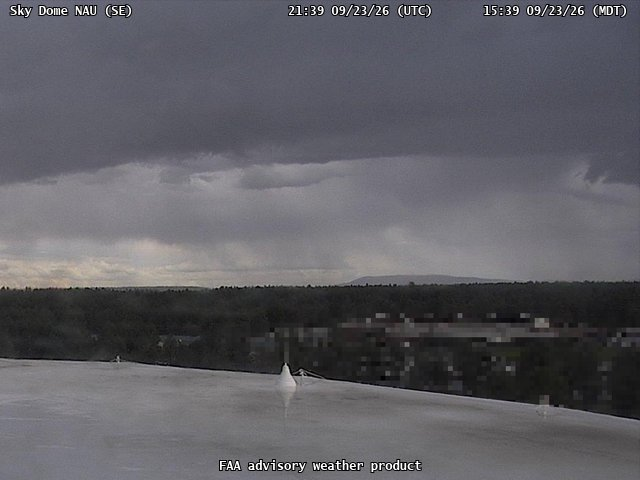
13400 · storm_view · goodSky Dome NAU · SouthEast
2026-09-23T21:40:09.459Z
user confirmed as a good storm viewFAA source 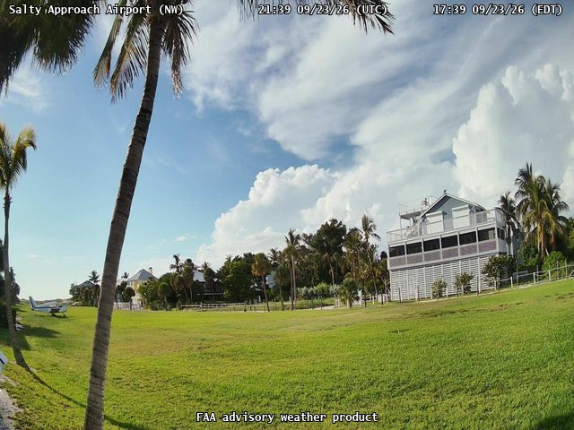
13752 · storm_view · goodFAA camera 13752
2026-09-23T21:39:37.281Z
user reclassified as a good storm viewFAA source 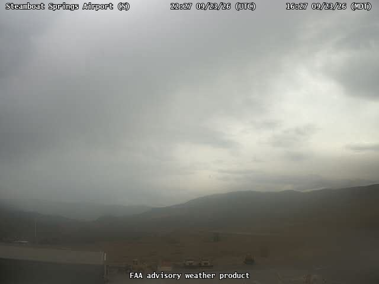
12104 · storm_view · poorSteamboat Springs Airport · South
2026-09-23T22:27:23.274Z
user selected as a poor storm viewFAA source 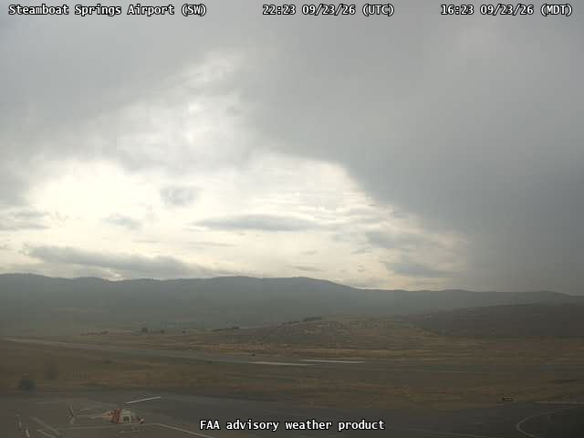
12105 · storm_view · poorSteamboat Springs Airport · SouthWest
2026-09-23T22:24:04.011Z
user selected as a poor storm viewFAA source 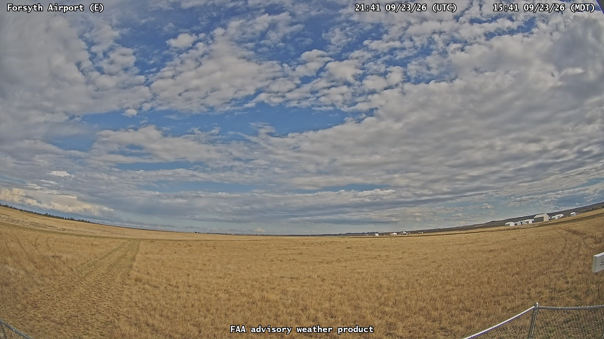
13646 · no_storm · goodForsyth Airport · East
2026-09-23T21:42:14.128Z
user selected as a good non-storm viewFAA source 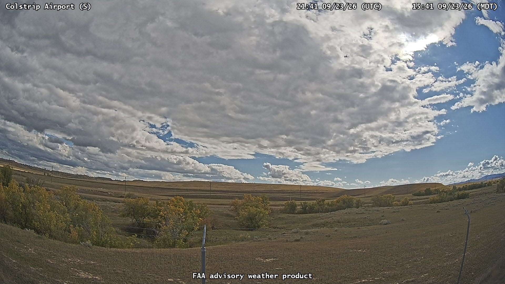
13651 · no_storm · goodFAA camera 13651
2026-09-23T21:42:16.277Z
user selected as a good non-storm viewFAA source 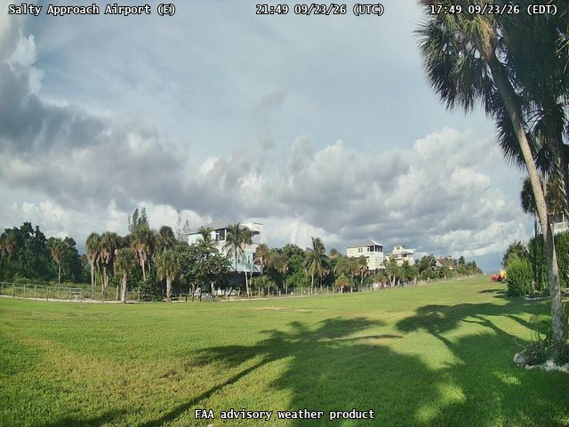
13751 · no_storm · goodSalty Approach Airport · East
2026-09-23T21:49:34.499Z
user selected as a good non-storm viewFAA source 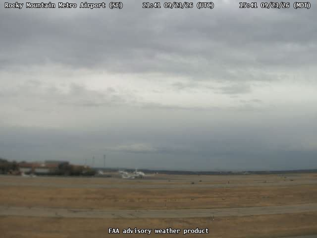
12076 · unknown · poorRocky Mountain Metro Airport · SouthEast
2026-09-23T21:41:41.021Z
soft, low detail horizonFAA source 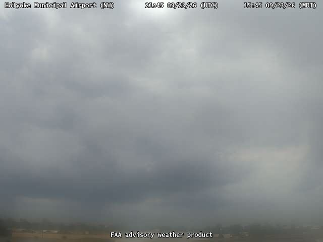
12086 · unknown · poorHolyoke Municipal Airport · NorthWest
2026-09-23T21:45:58.727Z
low contrast gray cloud and obscured horizonFAA source 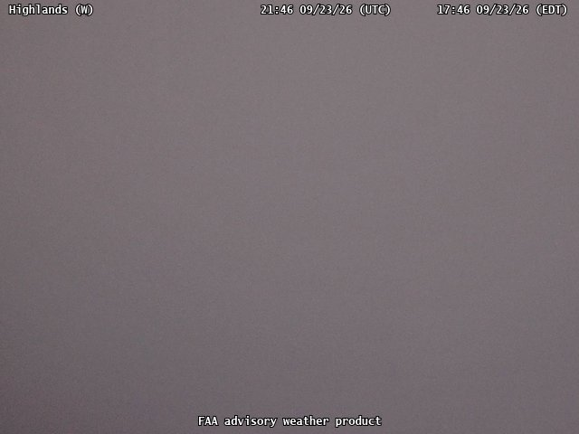
13514 · unknown · poorHighlands · West
2026-09-23T21:46:24.971Z
uniform gray fog obscures all scene detailFAA source 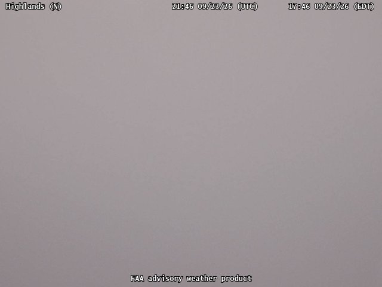
13517 · unknown · poorHighlands · North
2026-09-23T21:46:56.874Z
uniform gray fog obscures all scene detailFAA source 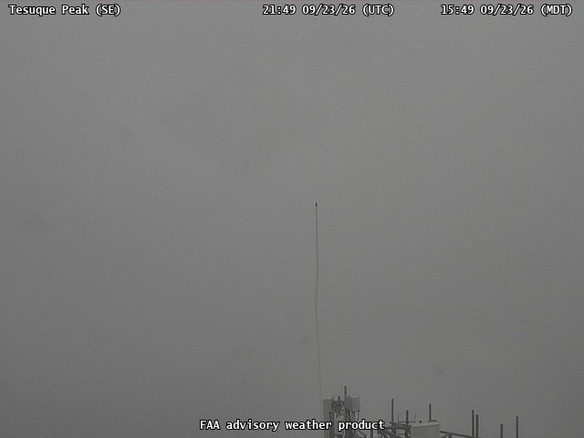
13806 · unknown · poorTesuque Peak · SouthEast
2026-09-23T21:49:54.441Z
fog obscures terrain and sky structureFAA source 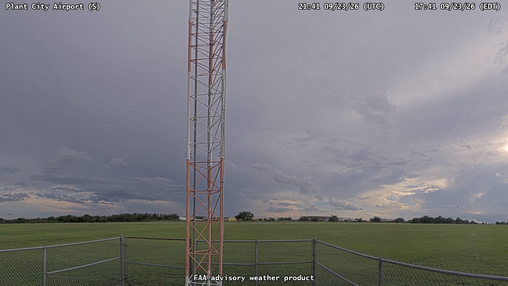
14039 · unknown · poorPlant City Airport · South
2026-09-23T21:42:01.795Z
tower blocks center of skyFAA source 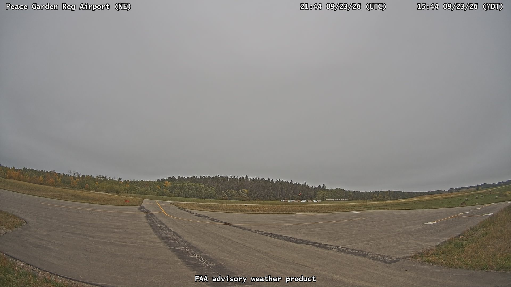
14096 · unknown · poorPeace Garden Reg Airport · NorthEast
2026-09-23T21:44:49.636Z
flat gray cloud with little structureFAA source 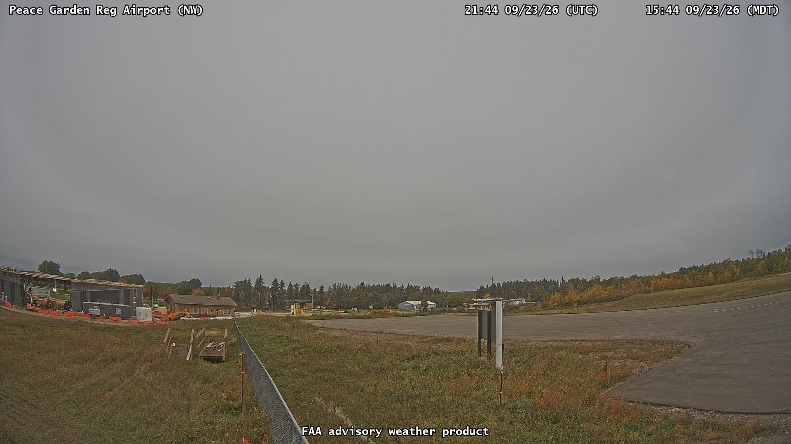
14099 · unknown · poorPeace Garden Reg Airport · NorthWest
2026-09-23T21:44:57.625Z
flat gray cloud with little structureFAA source